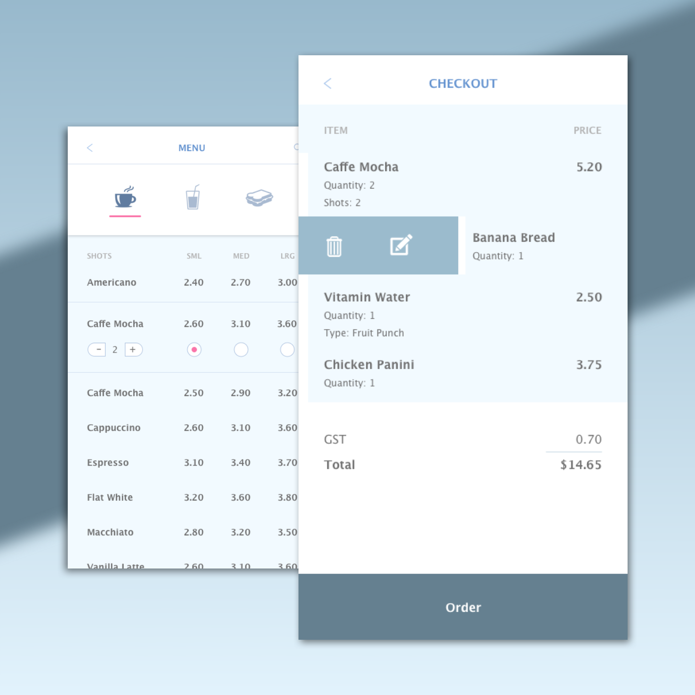

Day 54 - Coffee? Yes Please!
Today I focused more on colour consistency. Even though the colour wasn't what I wanted, I still needed to display the same colour throughout the app design.
The most difficult part about this creating design was definitely choosing the colours. I wanted to challenge myself by using both white and light blue. Placing these colours side by side was very hard, hard to differentiate. The only way for me to help with the differentiation was the implementation of shadows. This can be shown in the Menu screen, right under the first rectangle.
If I were to change the colours, I would create a dark background, probably dark grey, as the different option would stand out more. With the white colour, I, as the customer, wouldn't feel comfortable paying with their app (this could be a psychology thing). Everything looks too simple and the payment layout looks too plain. This definitely needs to be explored further if I were to change it up.
Other than the colours, everything was straight forward. I used boldness to differentiate different styles of text, and incorporated the colour red to clearly distinquish user choices.